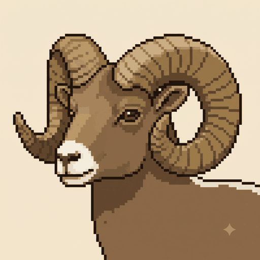

Species
Bighorn Sheep
Ovis canadensis
Bighorn sheep are cliff-dwelling mountain ungulates of the Y2Y corridor, famous for the massive curled horns of the rams.
In-game
- Habitat
- cliffs, alpine grassland
- Range
- medium
- Crossing preference
- overpass
- Seasonal pattern
- elevational migration
- Status weight
- ×2 (Vulnerable)
Real ecology behind the parameters
Bighorns rely on steep escape terrain — cliffs and rocky slopes adjacent to alpine grassland forage — captured in their habitat set. They make short elevational migrations between seasonal ranges rather than long-distance moves, giving them a medium range. As open-country animals that need sightlines, they favour overpasses over enclosed underpasses, like pronghorn. Small, isolated herds are vulnerable to disease (notably pneumonia from contact with domestic sheep) and to fragmentation, supporting the ×2 vulnerable weight; connecting herds helps maintain genetic and demographic health.